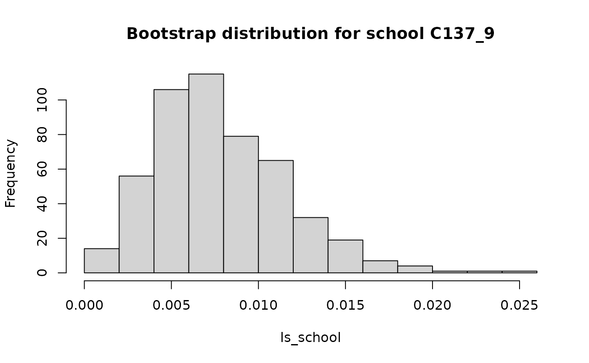

The segregation package includes functionality to
calculate entropy-based segregation measures, namely the Mutual
Information Index (M) and the Theil Index (H), which is a normalized
version of the M index. The package also includes several methods for
decomposing the index into between/within components and into local
segregation scores, as well as methods to decompose differences in
segregation indices. All of these methods have arguments to obtain
standard errors and confidence intervals through bootstrapping.
Detailed information on these indices can be found in the references at the end of this vignette.
The basic mathematics
The idea of a segregation index is to summarize a contingency table to a single number. For instance, we may have a table with \(U\) units, say schools or occupations, and \(G\) groups, say gender or racial groups. For each combination of unit and group we have a count, \(t_{ug}\). Arranged in a \(U\times G\) matrix \(\mathbf{T}\), this is what the structure of the data looks like:
| \(g=1\) | … | \(g=G\) | |
|---|---|---|---|
| \(u=1\) | \(t_{11}\) | … | \(t_{1G}\) |
| \(u=2\) | \(t_{21}\) | … | \(t_{2G}\) |
| \(u=3\) | \(t_{31}\) | … | \(t_{3G}\) |
| … | … | … | … |
| \(u=U\) | \(t_{U1}\) | … | \(t_{UG}\) |
From this matrix, we can define \(t=\sum_{u=1}^U\sum_{g=1}^G t_{ug}\), the total population size. The joint probability of being in unit \(u\) and racial group \(g\) is \(p_{ug}=t_{ug}/t\). Also define \(p_{u \cdot}=\sum_{g=1}^{G}t_{ug}/t\) and \(p_{\cdot g}=\sum_{u=1}^{U}t_{ug}/t\) as the marginal probabilities of units and groups, respectively. The Mutual Information Index is then defined as
\[ M(\mathbf{T})=\sum_{u=1}^U\sum_{g=1}^Gp_{ug}\log\frac{p_{ug}}{p_{u \cdot}p_{\cdot g}}. \] The Theil Index is closely related to the M index, as it is just a normalized version of the Mutual Information Index:
\[ H(\mathbf{T})=\frac{M(\mathbf{T})}{E(\mathbf{T})}, \]
where \(E(\mathbf{T})\) denotes the entropy of the group marginal distribution of \(\mathbf{T}\), i.e. \(E(\mathbf{T})=-\sum_{g=1}^{G}p_{\cdot g}\log p_{\cdot g}\). Dividing through the group entropy has the effect of constraining H to be between 0 and 1.
Data format
For the examples, we will use a dataset built into the
segregation package, schools00. This dataset
contains data on 2,045 schools across 429 school districts in three U.S.
states. For each school, the dataset records the number of Asian, Black,
Hispanic, White, and Native American students. The
segregation package requires data in long form (because
most segregation data comes in this form), not in the form of
contingency tables. Hence, each row of the schools00
dataset is a unique combination of a given school and a racial group,
and the column n records the number of students for this
combination:
library("segregation")
head(schools00[, c("school", "race", "n")])
#> school race n
#> 1 A1_1 asian 2
#> 2 A1_1 black 14
#> 3 A1_1 hisp 30
#> 4 A1_1 white 351
#> 5 A1_2 black 9
#> 6 A1_2 hisp 101Note that in the first school, A1_1, there are no Native
American students. Hence, that row is missing.
If you have data in the form of contingency tables, you can use
matrix_to_long() to convert them to the long format
required for the package. As an example:
(m <- matrix(c(10, 20, 30, 30, 20, 10), nrow = 3))
#> [,1] [,2]
#> [1,] 10 30
#> [2,] 20 20
#> [3,] 30 10
colnames(m) <- c("Black", "White")
matrix_to_long(m, group = "race", unit = "school")
#> school race n
#> 1: 1 Black 10
#> 2: 2 Black 20
#> 3: 3 Black 30
#> 4: 1 White 30
#> 5: 2 White 20
#> 6: 3 White 10The group and unit arguments are
optional.
Computing the M and H indices
Compute the M and H indices using mutual_total():
mutual_total(schools00, "race", "school", weight = "n")
#> stat est
#> 1: M 0.4255390
#> 2: H 0.4188083Interpreting the M is not easy, because it is not normalized. However, the H can range from 0 to 1, so a value of 0.419 would indicate moderate segregation.
The second argument to mutual_total() refers to the
groups, while the third argument refers to the units. Switching groups
and units does not affect the M index, but does change the H index:
mutual_total(schools00, "school", "race", weight = "n")
#> stat est
#> 1: M 0.42553898
#> 2: H 0.05642991This is because the segregation package always divides
by the marginal group entropy, and it would here hence divide
by the entropy of the school distribution, which we would expect to be
much larger (as there are many more schools than racial groups). To
check, we can use the entropy() function:
(entropy(schools00, "race", weight = "n"))
#> [1] 1.016071
(entropy(schools00, "school", weight = "n"))
#> [1] 7.541018Therefore, if the H index is used, it is important to specify the groups and units correctly.
For inference (discussed in more detail below), we can use bootstrapping to obtain standard errors and confidence intervals:
mutual_total(schools00, "race", "school",
weight = "n",
se = TRUE, CI = .95, n_bootstrap = 500
)
#> 500 bootstrap iterations on 877739 observations
#> stat est se CI bias
#> 1: M 0.4219147 0.0007621664 0.4205249,0.4233989 0.003624256
#> 2: H 0.4152776 0.0006959375 0.4139428,0.4166398 0.003530745As there a large number of observations, the standard errors are very small.
Between-Within decomposition
We might wonder whether segregation is different across the three different states. We can compute their segregation indices manually (just showing the M for simplicity):
split_schools <- split(schools00, schools00$state)
mutual_total(split_schools$A, "race", "school", weight = "n")[1, ]
#> stat est
#> 1: M 0.4085965
mutual_total(split_schools$B, "race", "school", weight = "n")[1, ]
#> stat est
#> 1: M 0.2549959
mutual_total(split_schools$C, "race", "school", weight = "n")[1, ]
#> stat est
#> 1: M 0.3450221Clearly, state A is more segregated than state C, which in turn shows higher school segregation than B. One of the advantages of entropy-based segregation indices is that these three state-specific indices have a simple relationship to the overall index. This is called the between/within decomposition: Total segregation can be decomposed into a term that measures how much the distribution of racial groups differs between states, and into a term that measures segregation within states. If we have \(S\) states (or “super-units” more generally), where each school belongs to exactly one state, the M index can be decomposed as follows:
\[ M(\mathbf{T})=M(\mathbf{S}) + \sum_{s=1}^S p_s M(\mathbf{T}_s), \] where \(\mathbf{T}\) is the full \(U \times G\) contingency table, \(\mathbf{S}\) is the aggregated contingency table of dimension \(S\times G\), \(p_s\) is the population proportion of state \(s\) (such that \(\sum_{s=1}^S p_s=1\)), and \(\mathbf{T}_s\) is the subset of rows of \(\mathbf{T}\) belonging to state \(s\). Put in simple terms, the M index can be decomposed into a between-state segregation index, plus a weighted average of within-state M indices.
For the H index, we are dividing the above formula by \(E(\mathbf{T})\). This makes the formula a bit more complicated, because the normalization has to be offset in the decomposition:
\[ H(\mathbf{T})=H(\mathbf{S}) + \sum_{s=1}^S \frac{E(\mathbf{T}_s)}{E(\mathbf{T})} p_s H(\mathbf{T}_s), \]
where \(E(\cdot)\) is again the entropy of the marginal group distribution. Note that \(E(\mathbf{T})=E(\mathbf{S})\), because the group marginal distributions are identical.
To compute the decomposition using the segregation
package, use:
# total segregation
(total <- mutual_total(schools00, "race", "school", weight = "n"))
#> stat est
#> 1: M 0.4255390
#> 2: H 0.4188083
# between-state segregation:
# how much does the racial distributions differ across states?
(between <- mutual_total(schools00, "race", "state", weight = "n"))
#> stat est
#> 1: M 0.09924370
#> 2: H 0.09767398
# within-state segregation:
# how much segregation exist within states?
(mutual_total(schools00, "race", "school", within = "state", weight = "n"))
#> stat est
#> 1: M 0.3262953
#> 2: H 0.3211343Note that \(0.426 = 0.0992 + 0.326\) and \(0.419 = 0.0977 + 0.321\). The results indicate that about 75% of the segregation is within states. In other words, differences in the racial composition of the three different states account for less than 25% of segregation.
By using mutual_total() with the within
argument, we can obtain the overall within component, but we do not
obtain the decomposition by state. To do so, we can use
mutual_within():
(within <- mutual_within(schools00, "race", "school",
within = "state", weight = "n", wide = TRUE
))
#> state M p H ent_ratio
#> 1: A 0.4085965 0.2768819 0.4969216 0.8092501
#> 2: B 0.2549959 0.4035425 0.2680884 0.9361190
#> 3: C 0.3450221 0.3195756 0.3611257 0.9402955This is a much simpler way to obtain state-specific segregation
scores compared to subsetting manually, as shown in the beginning of
this section. In addition to the M and H indices, we also obtain
p, the population proportion of the state (\(p_s\) above), and ent_ratio,
which is \(E(\mathbf{T}_s)/E(\mathbf{T})\) from above.
Hence, we can recover the total within-component using
which is exactly the same as before. The quantity \(p_s M(\mathbf{T}_s)\) is itself of interest, because it shows how much the states contribute to the segregation total, when taking into account their size. By adding the between component, we can calculate the contribution of the four components:
# merge into a vector
components <- c(between$est[1], within$M * within$p)
names(components) <- c("Between", "A", "B", "C")
signif(100 * components / total$est[1], 3)
#> Between A B C
#> 23.3 26.6 24.2 25.9Each of the four components contributes about a quarter to the total segregation of 0.426. Note that state A is the smallest state (27.7% of the population), but contributes the largest percentage (26.6%) to total segregation. Hence, the decomposition shows that it is important to look at both \(p_s\), the state sizes, as well as \(M(\mathbf{T}_s)\), within-state segregation.
The between-within decomposition can also be applied repeatedly in a
hierarchical setting. For instance, in the schools00
dataset, schools are nested within districts, and districts are nested
within states. Therefore, we can ask: How much segregation is due to
segregation between states, how much segregation is due to
between-district segregation within states, and how much segregation is
due to between-school segregation within districts? The package provides
a convenience function for this use case:
mutual_total_nested(schools00, "race", c("state", "district", "school"),
weight = "n"
)
#> between within stat est
#> 1: state M 0.09924370
#> 2: state H 0.09767398
#> 3: district state M 0.23870880
#> 4: district state H 0.23493319
#> 5: school state, district M 0.08758648
#> 6: school state, district H 0.08620114
# This is a simpler way of running the following three decompositions manually:
# mutual_total(schools00, "race", "state", weight = "n")
# mutual_total(schools00, "race", "district", within = "state", weight = "n")
# mutual_total(schools00, "race", "school", within = c("state", "district"), weight = "n")Local segregation
The M index (but not the H index) allows for another decomposition, into local segregation scores. To define this decomposition, let \(p_{g|u} = t_{ug} / t_{u \cdot}\) be the conditional probability of being in group \(g\), given that one is in unit \(u\). We can then define the local segregation score of unit \(u\) as
\[L_u = \sum_{g=1}^G p_{g|u}\log\frac{p_{g|u}}{p_{\cdot g}}\] The weighted average of the \(L_u\) is again \(M(\mathbf{T})\), i.e. \(M(\mathbf{T}) = \sum_{u=1}^U p_{u\cdot}L_u\).
To obtain the local segregation scores \(L_u\), along with the marginal weights
\(p_{u\cdot}\), use
mutual_local():
mutual_local(schools00, "race", "school", weight = "n", wide = TRUE)
#> school ls p
#> 1: A1_1 0.1826710 0.0004522985
#> 2: A1_2 0.1825592 0.0004978701
#> 3: A1_3 0.2756157 0.0006642066
#> 4: A1_4 0.1368034 0.0005685061
#> 5: A2_1 0.3585546 0.0004260948
#> ---
#> 2041: C165_1 0.3174930 0.0004568556
#> 2042: C165_2 0.3835477 0.0005297702
#> 2043: C165_3 0.2972550 0.0005650883
#> 2044: C166_1 0.3072281 0.0011586588
#> 2045: C167_1 0.3166498 0.0005354667Local segregation scores are based on much less data than the full M index, so it often makes sense to obtain confidence intervals. The following code plots the length of the 95% confidence interval in relation to the size of each school:
localse <- mutual_local(schools00, "race", "school",
weight = "n",
se = TRUE, wide = TRUE, n_bootstrap = 500
)
#> 500 bootstrap iterations on 877739 observations
localse$lengthCI <- sapply(localse$ls_CI, base::diff)
with(localse, plot(x = p, y = lengthCI, pch = 16, cex = 0.3))Although the relationship is not deterministic, larger schools have shorter confidence intervals.
Because the M is symmetric, local segregation scores can also be obtained for groups. The equivalent definition for the local segregation score of group \(g\) is then
\[L_g = \sum_{u=1}^U p_{u|g}\log\frac{p_{u|g}}{p_{u \cdot}},\]
and, as expected, \(M(\mathbf{T}) = \sum_{g=1}^G p_{\cdot g}L_g\).
To obtain these scores, switch the group and unit arguments in
mutual_local:
(localg <- mutual_local(schools00, "school", "race", weight = "n", wide = TRUE))
#> race ls p
#> 1: asian 0.6287673 0.022553401
#> 2: black 0.8805413 0.190149919
#> 3: hisp 0.7766327 0.151696575
#> 4: white 0.1836393 0.628092178
#> 5: native 1.4342644 0.007507927These results show that the racial groups experience very different levels of segregation: White students are less segregated than Asian, Black, Hispanic, and, especially, Native American students.
Inference
The four main functions of the packages, mutual_total(),
mutual_within(), mutual_local(), and
mutual_difference() all support inference through
bootstrapping. Inference for segregation indices is tricky, and the
standard error estimates and confidence intervals should not be trusted
too much when there is little data, and especially when the segregation
index is very close to either 0 or maximum segregation.
To estimate standard errors and confidence intervals, use
se = TRUE. The coverage of the confidence interval can be
specified in the CI argument. The number of bootstrap
iterations can be specified as well:
(se <- mutual_total(schools00, "race", "school",
weight = "n",
se = TRUE, CI = .95, n_bootstrap = 500
))
#> 500 bootstrap iterations on 877739 observations
#> stat est se CI bias
#> 1: M 0.4219160 0.0007961718 0.4204157,0.4235038 0.003622962
#> 2: H 0.4152401 0.0007502961 0.4137222,0.4166662 0.003568252The confidence intervals are based on the percentiles from the
bootstrap distribution, and hence require a large number of bootstrap
iterations for valid interpretation. The estimate est that
is reported in the results has already been “debiased”, i.e. the bias
that has been estimated from the bootstrap distribution (which is
reported in bias) has been subtracted from the usual
maximum-likelihood estimate that we would obtain from
mutual_total with se = FALSE. The confidence
interval is centered around the debiased estimate.
On balance, confidence intervals are preferred over the standard error because the bootstrap distribution can be skewed, especially when segregation is very low or very high. For this example, we can see that the standard errors provide almost identical coverage to the confidence intervals, as
# M
with(se, c(est[1] - 1.96 * se[1], est[1] + 1.96 * se[1]))
#> [1] 0.4203555 0.4234765
# H
with(se, c(est[2] - 1.96 * se[2], est[2] + 1.96 * se[2]))
#> [1] 0.4137695 0.4167106provide effectively the same coverage as the confidence intervals obtained from the percentile bootstrap.
Whenever the bootstrap is used, the bootstrap distributions for each
parameter are reported in an attribute bootstrap of the
returned object. This can be used, for instance, to check whether the
bootstrap distribution is skewed. The following code computes local
segregation scores for all schools, and then shows a histogram of the
bootstrap distribution for school C137_9, which has a very low local
segregation score:
local <- mutual_local(schools00, "race", "school",
weight = "n",
se = TRUE, CI = .95, n_bootstrap = 500
)
#> 500 bootstrap iterations on 877739 observations
# pick bootstrap distribution of local segregation scores for school C137_9
ls_school <- attr(local, "bootstrap")[school == "C137_9" & stat == "ls", boot_est]
hist(ls_school, main = "Bootstrap distribution for school C137_9")
For this school, the bootstrap distribution is skewed. If precise inference about this specific school is needed, the standard error should not be interpreted, and the confidence interval should only be interpreted when the number of bootstrap iterations is large.
If you are concerned that your contingency table is too small to
provide reliable segregation estimates, the package also provides a
function mutual_expected() that simulates random cell
counts under independence from the marginal distributions of your table.
For the schools00 dataset:
mutual_expected(schools00, "race", "school", weight = "n", n_bootstrap = 500)
#> stat est se
#> 1: M under 0 0.004805841 7.647870e-05
#> 2: H under 0 0.004729828 7.526905e-05Here, there is no concern about bias due to a small sample size.
Decomposing differences in indices
The command mutual_difference() can be used to decompose
differences in segregation, as described in Elbers (2021). The default,
and recommended method, is to use method = shapley (or
method = shapley_detailed). The other methods
(mrc, km) exist mostly for testing purposes,
and are not recommended. Details on the procedure and how to interpret
the terms of the decomposition are found in Elbers (2021).
mutual_difference(schools00, schools05, "race", "school", weight = "n")
#> stat est
#> 1: M1 0.425538976
#> 2: M2 0.413385092
#> 3: diff -0.012153884
#> 4: additions -0.003412776
#> 5: removals -0.011405093
#> 6: group_marginal 0.017871051
#> 7: unit_marginal -0.011712727
#> 8: structural -0.003494338This method also supports inference by setting
se = TRUE.
References
Elbers, B. (2021). A Method for Studying Differences in Segregation Across Time and Space. Sociological Methods & Research. https://doi.org/10.1177/0049124121986204
Mora, R., & Ruiz-Castillo, J. (2011). Entropy-based Segregation Indices. Sociological Methodology, 41(1), 159–194. https://doi.org/10.1111/j.1467-9531.2011.01237.x
Theil, H. (1971). Principles of Econometrics. New York: Wiley